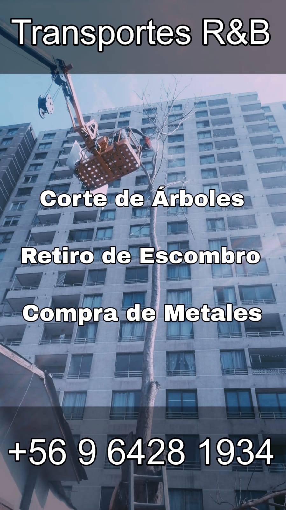

TRANSPORTES R&D
TRANSPORTES R&D
TRANSPORTES R&D
TRANSPORTES R&D
Especialistas en transporte, manejo responsable de residuos, corte de árboles y gestión de metales con cumplimiento normativo y puntualidad rigurosa.
Operaciones ágiles con equipos certificados y la seriedad que tu empresa constructora o municipio necesita.
Servicio especializado de poda, tala y extracción de árboles en altura, zonas urbanas y terrenos complejos. Contamos con personal capacitado y equipos de seguridad certificados.
Retiramos restos de construcción, escombros, ramas, basura voluminosa y se realiza un tratamiento especial con botaderos establecidos. Llegamos con camión y dejamos el terreno libre de residuos de manera autorizada.
Compramos fierro, aluminio, galvanizado, bronces, acero y todo tipo de latas en general. Ofrecemos tasación del mercado con transparencia total, utilizando balanzas digitales pesaje y pago inmediato.
En TRANSPORTES R&D nos enfocamos en ser tu primera opción en servicios de transporte y manejo de residuos. Nos destacamos en la tala de árboles por nuestra responsabilidad, puntualidad estricta y trato directo profesional.
Somos un equipo eficiente compuesto por 2 profesionales calificados para el trabajo en terreno, garantizando una operación eficaz y coordinada.
Responsable directo en terreno, manejo y experto certificado en el área de manejo de corte y tala compleja.

Evidencia real de nuestras maquinarias, faenas con alta protección y efectividad operativa.

Trabajos en áreas complejas y de poco acceso.

Seguridad y estabilidad en las áreas trabajadas.

Proceso/Resultado de Poda en varios árboles.

Capacidad operativa de transporte con camiones listos para despejar la obra en tiempo récord.

Sujeción de escombros con eslingas y amarres de alta resistencia para un transporte seguro por carretera.

Restos de un trabajo exitoso, se recoje todo y se deja limpio.